A visible field of directional sources
Calibrated capture positions and their directional images become the data for a free-camera renderer, with sample markers and ray coverage visible.
Capture a scene, then walk through its recorded light. Direct ray-field modes reveal both convincing views and surreal seams, layers and gaps; those artifacts are part of the visual exploration. Refocus the same observations or fit NeRF, Instant-NGP and Gaussian splats to compare another way of carrying the scene.
Explore connections Brochure · 10 chapters ↓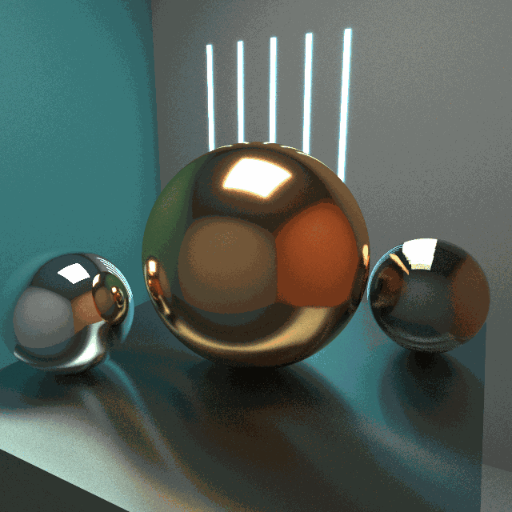
One set of observations supports faithful reconstruction and an exploration of its artifacts. Direct ray-field rendering, synthetic optics and learned models expose different ways to extend the captured views.
Render a calibrated camera rig; every image stores colors indexed by direction at a known position.
Move a virtual camera among the sample positions and render from the captured directional images.
Change matching, focus and aperture; explore both aligned views and the layers or seams that appear between samples.
Fit NeRF or Gaussian splats to the observations and explore a saved checkpoint.
Inspect raw-ray synthesis, learned appearance and the source scene at a corresponding view.
Calibrated capture positions and their directional images become the data for a free-camera renderer, with sample markers and ray coverage visible.
Ray matching and synthetic aperture turn camera motion, focus and blur into operations on the recorded views. Epipolar slices expose their parallax geometry.
Narrow matching, nearest-view selection and proxy-depth blending produce different seams, fragments and layers. Camera coverage explains which parts of a new view remain constrained.
The native viewer coordinates Python jobs, saved NeRF/GS models and matched-camera inspection, keeping the original field available beside the learned representation.
Related techniques belong to one family. Follow a family into the interface, recorded results and mathematical detail.
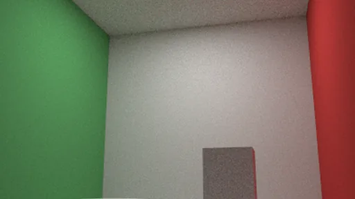
01 / 03Direct ray-field rendering makes the sample geometry visible: convincing views, surreal fragments, and focus or aperture changes all come from querying the captured field.
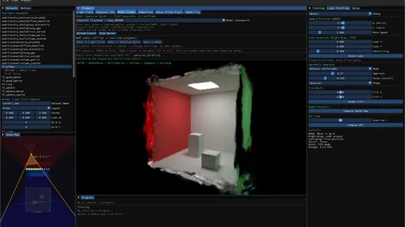
02 / 03Retain the explicit light field while learning two alternative representations of its observations: neural radiance functions and spatial Gaussian primitives.
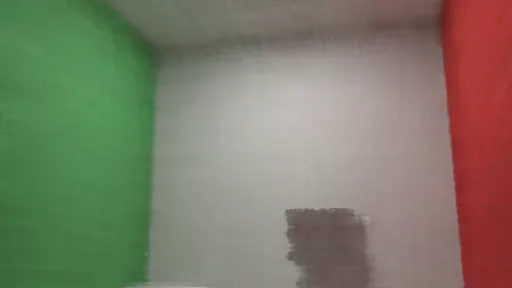
03 / 03Move a corresponding camera through direct light-field synthesis, learned appearance and the source scene, then evaluate with explicit image identities.
LightField / Neural makes captured light explorable: move among recorded directional images, change how neighboring views blend, and refocus the array. Convincing reconstruction matters, but so does the surreal side—the seams, layers and fragments that appear between observations. Direct light-field modes are complete experiments in their own right; NeRF and Gaussian splatting offer additional representations of the same samples.
Scan the descriptions and figures, or open a layer for the implementation and mathematical detail.
Direct ray-field rendering makes the sample geometry visible: convincing views, surreal fragments, and focus or aperture changes all come from querying the captured field.
A photograph records directional information at one viewpoint. A calibrated collection records it at many positions. The workbench places those samples back into space and lets a virtual camera move through them: recorded images become the material from which another image is rendered.
The virtual-source interpretation makes the geometry visible. Each sample position carries many directional colors, rather than one uniform light intensity. Moving the viewer, blending neighboring samples or changing the synthetic aperture produces parallax and focus effects directly from this field. NeRF and Gaussian splatting extend the study with learned representations; the raw light-field renderer is a complete experiment in its own right.
The GLSL renderer reads a texture array of captured images together with camera transforms and intrinsics. A query direction is transformed into a captured camera frame and projected to a texture coordinate. Candidate views are checked against sidedness and image bounds, then their stored RGB samples are combined.
This resembles replaying the recorded appearance from virtual directional sources. It is an image-based representation: the shader does not turn each capture position into an inverse-square point light, trace illumination from those points to new surfaces, or solve a new lighting configuration.
The capture metadata distinguishes single-sided and bidirectional sampling. In the bidirectional convention, the viewer can reuse the same sensor image along the continued line through the pinhole. This is a representation convention, not a second independently measured view of the scene.
Keeping the source scene and camera calibration also makes a second question possible: whether a missing surface, a wide interpolation kernel or an imperfect learned fit explains a visible error. The Cornell results retain that comparison without reducing the light field to a preprocessing check.
offline_projs/LightField_Neural/viewer/shaders/light_field_rayspace.fragCamera metadata, texture layers and preview selectionoffline_projs/LightField_Neural/viewer/src/rayspace_view.cppA sparse field does more than blur. Nearest-view selection breaks it into territories; a wider matching kernel lets images overlap; a proxy-depth sweep stretches them into layers. These modes expose different visual structures in the same observations, before any neural model is fitted.
I treat those artifacts as material to explore, much as in the photon-primitive studies. The artistic question is where to preserve a recognizable view and where to let the representation become strange. Missing observations still limit reconstruction: a striking extension is not evidence that an unseen view is physically correct.
A finite capture constrains only part of ray space. One possible artistic extension would keep a chosen base reconstruction on protected rays and blend toward another continuation elsewhere. A mask equal to one on the protected set would preserve that base exactly there; its transition region would determine how the effect joins the scene.
The current native modes already offer different lookups and blends. They do not yet provide this protection mask or certify agreement with every measured ray. Such a control would need explicit reference-view checks; interpolation, finite footprints and noisy captures already affect the base reconstruction.
Two captured scenes take the experiment beyond the Cornell box. Copper and glass pairs moving reflections with a brushed-metal plinth; Cloud on brushed metal replaces the central surface with an actual heterogeneous participating medium. The native renderer supplies the observations. The learned models reproduce their appearance with different compromises.
The copper rig records 224 views around a full orbit. The cloud rig uses 147 overlapping views across a front arc from −75° to +75°. Both capture 192 × 192 images at 128 samples per pixel. These modest input images keep training practical; a larger output does not create missing source detail.
The saved Gaussian, Instant-NGP and NeRF checkpoints can open directly in Model Viewer. For recording, use the Gaussian model for smoother camera movement; the PyTorch neural renderers suit slow moves and settled views. The native reference remains available alongside each approximation. Reflection blur, splat artifacts and uncaptured viewpoints are part of the comparison.
This project’s PyTorch hash-grid implementation is not the fused CUDA Instant-NGP renderer. It supports settled neural views here; the Gaussian model is the practical first choice for moving-camera recordings. Blur and reduced detail remain visible even after the longer training run.
Capture generates images from a configured family of cameras. The implementation supports planar grids, look-at planar grids, rings, spheres, spherical caps and parabolic arrangements. A rig carries positions, orientation rules, field of view, resolution and sampling settings. Capture metadata records the resulting views and sidedness so the inspection tools can interpret the array.
A planar array gives the field a clear spatial grid; ring and sphere layouts distribute directional views around a region. The scene map and camera markers make this arrangement part of the rendered experience. Changing the baseline or orientation changes the ray samples available to a moving viewer, connecting acquisition choices to parallax, overlap and disocclusion.
Scene presets coordinate acquisition and training settings, but capture and training remain explicit operations. This is useful when revisiting an experiment: the rig, dataset and model configuration can be examined separately instead of assuming that one preset label defines every part of the run.
Coverage and density solve different problems. A front-facing grid can be locally dense but says little about the back of an object; a coarse sphere sees more sides but leaves large jumps between observations. Increasing blur joins sparse contributions at the cost of detail. More overlapping views address the sampling gap, while lower per-view resolution keeps acquisition and storage practical. Neither interpolation nor blur recovers an unseen disocclusion.
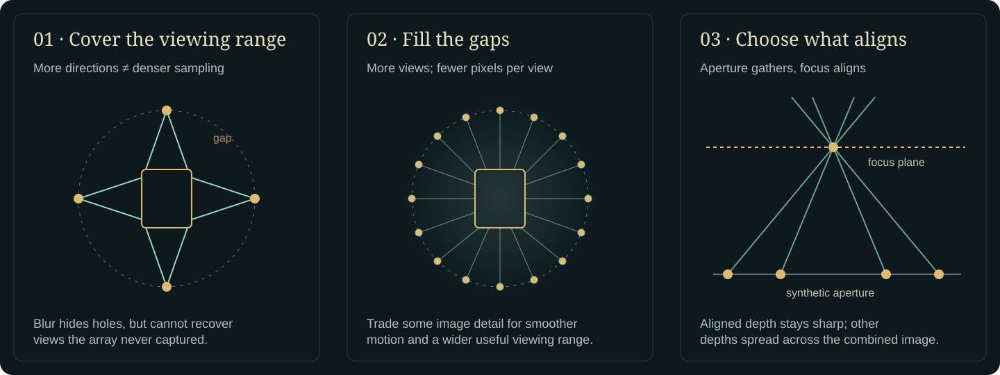
Dense orbit preview uses 48 × 9 cameras across 360° of azimuth and elevations −30° to +50°. At 160 × 160 pixels and 16 samples per pixel, it trades fine texture resolution for 432 nearby viewpoints. Sparse orbit control uses the same range with 12 × 3 cameras, so the effect of sampling density can be shown directly.
Refocus preview uses a converging 21 × 21 planar array: 441 cameras, 35 mm spacing and a 0.7 m total baseline. It is designed for a front-facing synthetic-aperture demonstration, not all-direction coverage. Capture the dataset first; a preset configures acquisition and viewing, it does not supply a trained model.
| Rig family | Geometric arrangement | Question it exposes |
|---|---|---|
| Plane / PlaneLookAt | A translated array, parallel or converging toward a target | How much local parallax and forward-facing coverage is enough? |
| Ring / Sphere / SphereCap | Cameras distributed around a region | Which surfaces and viewing directions become constrained? |
| Parabolic | A curved acquisition surface | How does changing the spatial sampling geometry alter interpolation and coverage? |
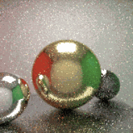
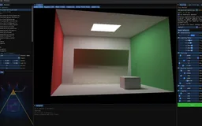
Recorded examples · 1Sample positions and directional viewsThe camera array becomes a visible sampling of the light field: spatial positions, recorded directional images and the current virtual view.＋The raw field has its own renderer. A free camera queries the recorded directional images, while Sharp and Smooth matching change how tightly a ray selects nearby capture positions. The scene map, sample markers and ray-coverage display connect the synthesized image to the data that contributes to it.
Refocusing turns the camera array into a synthetic aperture. Views are reprojected toward a chosen focus plane and combined: features aligned by that plane stay sharper, while other depths spread across the image. Aperture changes the contributing region of the array. Epipolar slices provide a complementary view of the same geometry by laying image rows alongside their camera positions.
For a rectified pair of cameras, a useful approximation is residual disparity Δx ≈ f B (1/z − 1/z₍focus₎), with focal length f in pixels and baseline B in scene units. A wider baseline makes wrong-depth features separate more strongly; denser camera sampling fills that blur more smoothly. Moving focus changes alignment, while increasing the ray-matching kernel merely mixes less similar observations. They are different controls.
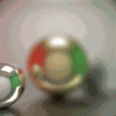
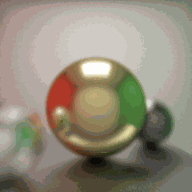
In ray-matching modes, a ray must pass near a captured position or satisfy the angular/reprojection fallback; the directional lookup still checks sidedness and texture bounds. The matching width therefore changes both coverage and blur. Coverage and pipeline-stage views expose acceptance decisions, while colored markers remain an aid to reading the camera arrangement.
The projection sweep is an exploratory image blend, not a recovered depth field. Its multiple proxy depths can remain visible as overlapping layers, as in the supplied native capture. The patch-based disparity view separately searches horizontal shifts across a row of cameras and displays a normalized result; its current assumptions do not provide calibrated metric depth for every rig.
The ray-space preview selects at most 128 camera entries from the available capture. It retains image-layer identities and the associated poses. Larger captures can therefore have more recorded observations than the live ray-space shader displays at once.
| Operation | Implementation | Visible effect |
|---|---|---|
| Sharp / Smooth | Project the query direction into eligible captured images; use a narrow or wider Gaussian in ray-to-camera distance. | Individual sample support becomes a more continuous, softer blend. |
| Voronoi | Use the nearest accepted camera candidate for each query ray. | Sample selection boundaries remain apparent. |
| Projection / captured Soft-3D mode | Sample several proxy points along a query ray and project them into captured cameras. | Layered scene appearance without solving for a single reconstructed surface. |
| Refocus | Project a shared focus point into aperture-selected cameras and apply Gaussian aperture weights. | Image features align near the selected focus plane and spread away from it. |
| Epipolar slice | Extract a fixed image row across a sequence of views. | Feature trajectories reveal the relationship between image position and viewpoint. |
offline_projs/LightField_Neural/viewer/shaders/light_field_rayspace.fragEpipolar and disparity operationsoffline_projs/LightField_Neural/viewer/src/light_field_ops.cpp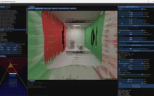
Recorded examples · 2Rendering the recorded lightPinhole, refocus and projection views construct images directly from captured rays, exposing the geometry of interpolation and synthetic aperture.＋Retain the explicit light field while learning two alternative representations of its observations: neural radiance functions and spatial Gaussian primitives.
The explicit light field stores captured images and their calibrated positions. Learned representations reorganize those observations: NeRF into neural density and directional color, Gaussian splatting into spatial primitives. They can be explored under a corresponding inspection camera, making the choice of representation visible rather than hiding it behind one final render.
The NeRF route represents density and view-dependent color with neural functions and renders by accumulating samples along camera rays. The project includes coarse/fine sampling and training orchestration around this model. A representation can fit observations while still blurring edges or leaving unsupported regions ambiguous; the saved test renders make those effects inspectable.
Gaussian splatting uses an explicit collection of spatial Gaussian primitives. Their projected shapes, appearance and opacity contribute through a differentiable renderer. The reference backend uses gsplat rasterization and its density-control strategy; the project also includes my own experimental renderer.
Both methods can reproduce appearance from a calibrated set of observations. Neither image quality nor a completed training cycle alone establishes correct geometry, relightable material, or generalization outside the captured region. The workbench keeps those questions separate from the basic ability to synthesize a view.
The C++ viewer launches Python jobs with explicit dataset, method, backend and profile settings. Status files, subprocess output, previews and checkpoints connect the running training loop back to the application. A queue can retain later jobs while the current job continues. The application reports failed stages explicitly, so a stalled job can be distinguished from a slowly updating preview.
Fast profiles are explicit budgets for each registered method, not a promise that every representation converges equally quickly. The standard NeRF preview uses 1,200 iterations and a 96-pixel evaluation image; Instant-NGP uses 600 iterations at the same preview size. Six experimental methods use smaller 500-iteration configurations. Their previews help inspect whether training is making progress, while longer runs remain necessary for difficult geometry and held-out views.
Training progress and final evaluation also mean different things. A high training PSNR can coexist with a weaker held-out view. The interface can show the process, while a report must identify the dataset partition and the quantity actually measured.
Some representations need more than images. Neural textures requires a mesh that agrees with the capture; its fallback Cornell mesh is a proxy, not recovered geometry. Fast mode now reports coverage and rejects an empty training mask, instead of reporting a deceptively perfect score for an all-black result. A successful short run validates the pipeline, not convergence.
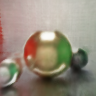
Move a corresponding camera through direct light-field synthesis, learned appearance and the source scene, then evaluate with explicit image identities.
The supplied narrow Cornell capture contains 64 cameras: 56 training views and eight test views, with 400×400 images. Saved NeRF and reference-GS runs include test renders and per-view metrics. The images below use the first test camera, paired through the dataset frame and the producer's index convention rather than through matching filenames.
NeRF was recorded at 3,000 steps and reference GS at 5,000. Mean PSNR across the decoded PNG test images is approximately 29.37 and 23.41 dB respectively, using the corrected evaluator. The runs used different budgets and not all settings were saved, so these numbers describe the examples shown rather than rank the methods.
The comparison is most useful visually. Inspect surface softness, wall boundaries and the ceiling emitter. The captured target itself contains rendering noise, so the reference is a sampled synthetic observation rather than an exact noise-free image.
The inspection camera moves through a directly rendered light field, a supported learned checkpoint and a source-scene reference. These views expose different ways of carrying the same observed appearance. The model registry distinguishes the project’s Gaussian, NeRF and Instant-NGP routes from the more exploratory methods; a method appearing in the registry is not a claim of equal preview speed or reconstruction quality.
The native application also projects the inspection camera into the raw light-field parameterization and can render a scene reference. This creates a useful three-way inspection of captured-ray interpolation, learned representation and known source scene. Synchronizing the camera does not automatically make the information budgets equal: the saved raw array includes observations that were excluded from model training.
A controlled interpolation experiment should restrict the raw-LF baseline to the same training observations and evaluate a newly held-out pose. The live mode remains valuable for finding coverage gaps, but those gaps should be interpreted with the permitted input views and the rig's parameterization in view.
The generic evaluator now requires an explicit manifest containing camera identity, render filename and reference filename. This prevents a subtle failure: captures preserve original camera IDs, one trainer writes zero-based test indices, and another writes one-based indices. A file called r_1.png can therefore refer to different cameras. Missing or ambiguous mappings fail clearly rather than guessing an offset or silently skipping views.
A separate limitation remains in aggregate PSNR: empty black views can dominate a mean. One saved freewalk run contains six exact-black matches among nine views, inflating its average score. Coverage, nonempty-view errors and the full per-view breakdown should accompany any acquisition comparison. The next strong experiment is therefore controlled camera coverage under equal image and training budgets, not another unqualified scalar score.